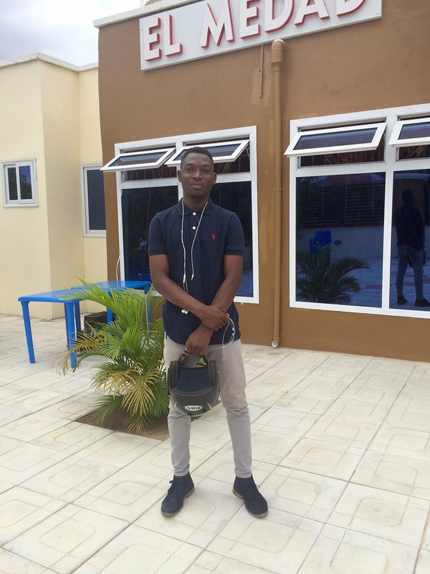
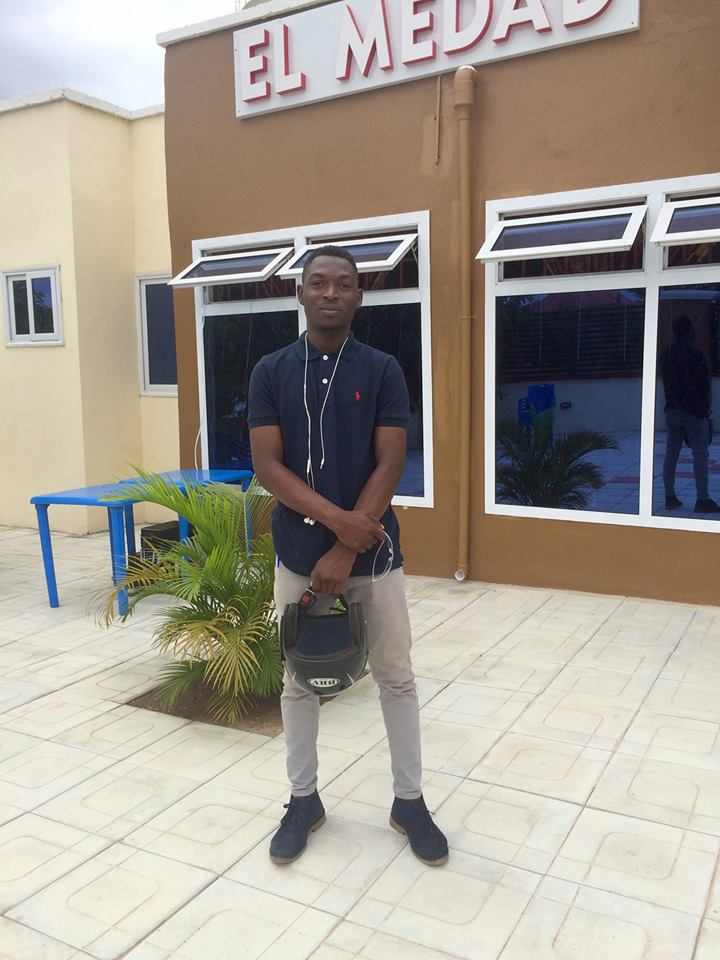
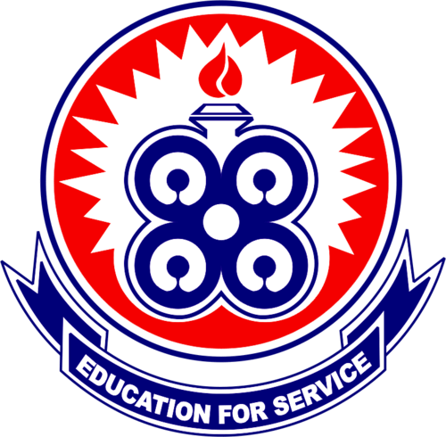
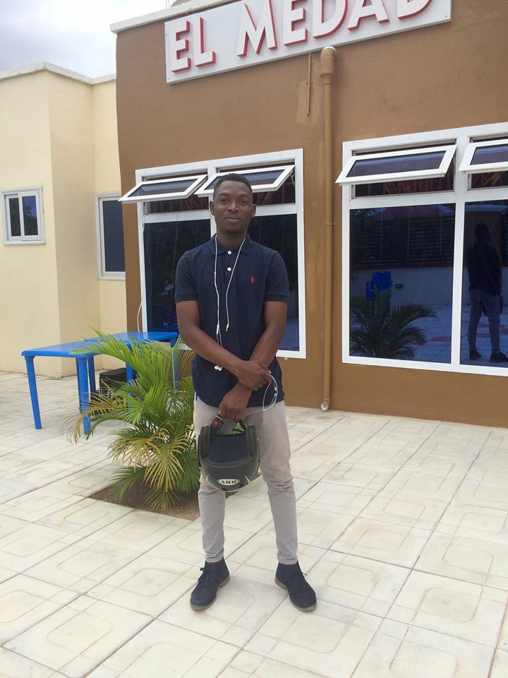

Cultivate your curiosity, explore your passions and create your own community with one of the more than 1,000 different clubs and student-run organizations across our three campuses. You will find a club for almost every pursuit - from beekeeping to breakdancing, magic to mah-jong, Quidditch to space robots. Some clubs focus on cultural connections or spiritual ties, and others, such as Departmental student societies, on academic interests. Meet fellow enthusiasts and like-minded colleagues. And if you can not find something that excites you, start a group of your own
You will find unparalleled academic options, alongside a multitude of different social, cultural, recreational and wellness initiatives.
university of education

The University of Education, Winneba (UEW) was established in September, 1992 as a University College under PNDC Law 322. On 14th May, 2004 the University of Education Act, Act 672 was enacted to upgrade the status of the University College of Education of Winneba to the status of a full University. The University College of Education of Winneba brought together seven diploma awarding colleges located in different towns under one umbrella institution. These Colleges were the Advanced Teacher Training College, the Specialist Training College and the National Academy of Music, all at Winneba; the School of Ghana Languages, Ajumako; the College of Special Education, Akwapim-Mampong; the Advanced Technical Training College, Kumasi; and the St. Andrews Agricultural Training College, Mampong-Ashant
The three sites in Winneba now referred to as the Winneba campus is the seat of the Vice-Chancellor with satellite campuses at Kumasi, Mampong and Ajumako.
| Name: | FREDRICK OFOSUHENE ASANTE |
|---|---|
| Telephone: | 0549194945 |
| 0207612239 |